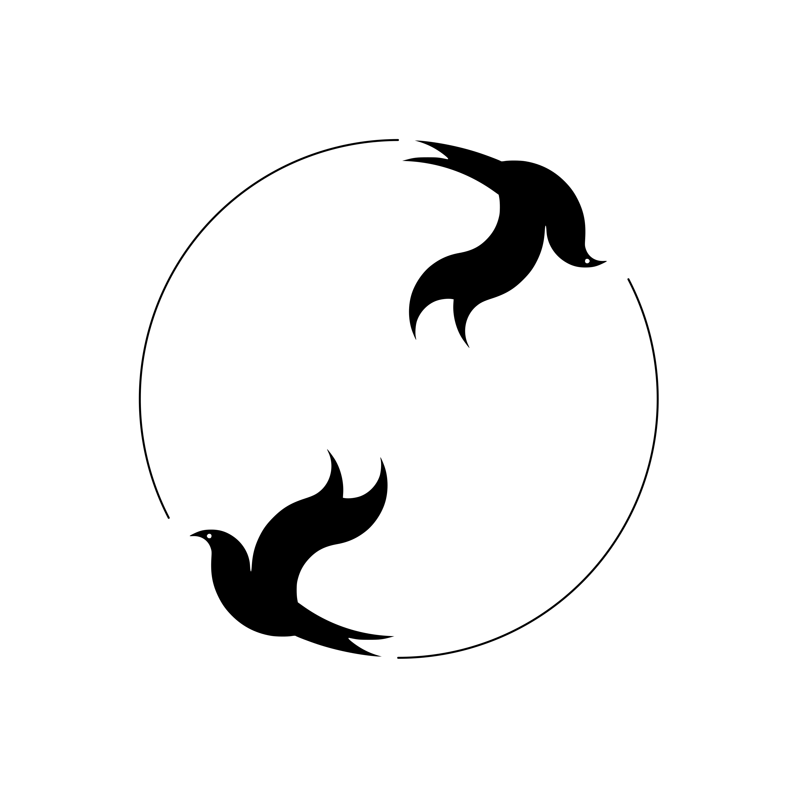

A field guide for running large language models on your own hardware: benefits, tradeoffs, what to run, and how to get started without getting overwhelmed.
If your goal is to get a model running quickly, you can skip ahead of the background sections below and return to them once you have something working.
The install command below pipes a remote script straight into a shell. Don't run that pattern on autopilot, here or anywhere else. Open the script URL in a browser first and skim it, or download it and read it before executing (curl -fsSL https://ollama.com/install.sh -o install.sh, then open install.sh). The same rule applies to every curl | sh and | bash you'll see across this ecosystem: know what the code does before it touches your machine. Critical thinking is one of the most important skills you have as a human reading these words, definitely use it here.
# macOS / Linux / WSL: fetch and run Ollama's install script.
# (see the callout above: read it before piping it into a shell)
curl -fsSL https://ollama.com/install.sh | sh
# pull the model weights (first time only) and start an
# interactive chat session in the terminal
ollama run qwen2.5:7b
# ollama also runs a local server in the background;
# point any OpenAI-compatible client at this URL instead
# of api.openai.com to use it programmatically
http://localhost:11434/v1No GPU, or only 8GB of RAM? Swap qwen2.5:7b for qwen2.5:3b or llama3.2:1b. First run downloads the weights (a few GB); every run after that is instant.
Local models allow you to be in control of where your data goes and run on your local hardware. They are only limited by the hardware you run them on.
Nothing leaves the machine. This matters for confidential client work, unpublished research, internal codebases, and customer data that should not be sent to a third party's servers. With local inference, the claim that data never left the machine can be verified directly, rather than taken on faith in a vendor's policy.
API pricing is per-token and scales linearly with usage. A local box is a fixed cost: hardware purchased once, with ongoing electricity costs. For workloads running thousands of inference calls a day, such as batch jobs, agent loops, or evaluation harnesses, the breakeven point arrives quickly.
For field work, secure facilities, unreliable connectivity, or a flaky home internet connection, local inference has no dependency on network availability. A llamafile on a USB stick functions as a complete, self-contained assistant.
Testing multiple quantizations of the same model, adjusting sampling parameters, fine-tuning a LoRA, or deliberately breaking the setup to see how it fails, all of this is free once the weights are downloaded. This allows for open-ended exploration rather than the more cautious, metered experimentation that hosted APIs require. With the weights on your own disk, you can inspect them directly and control every setting exposed by the runtime, a level of access into a model's inner workings that a hosted API, where you're limited to whatever parameters the provider chooses to expose, doesn't offer.
There is no network round trip. For agentic workflows that make many small calls in a loop, local inference on reasonably capable hardware can respond faster overall than a hosted API, even at a lower raw tokens-per-second rate, because there is no request queue or rate limit involved.
Local models will not match the reasoning ability of a frontier hosted model, and running a large model well still requires substantial hardware. We treat local inference as a complement to hosted APIs for the workloads described above, and continue to rely on hosted models for the hardest problems. Like many solutions in life, the fix is normally a hybrid of many technologies and the procedures around how we implement them.
Most mainstream local runners are built on top of llama.cpp, or on Apple Silicon, MLX. What differs between them is the packaging: how much control the user has, how polished the interface is, and how easily an agent framework can connect to the resulting server.
| Tool | Form | Best for |
|---|---|---|
| Jan.AI | Desktop app + local API | Clean GUI with an OpenAI-compatible endpoint out of the box; good default on Apple Silicon |
| llamafile | Single executable | Portability: air-gapped machines, demos, handing a model to someone non-technical |
| LM Studio | Desktop app | Performance tuning; built-in tokens/sec and VRAM diagnostics, strong on NVIDIA |
| Ollama | CLI + local API | Low-friction scripting and container deployments, curated model library |
| llama.cpp (raw) | Library / server binary | Full control; custom quantization, grammars, speculative decoding, headless servers |
| Format | Notes |
|---|---|
| GGUF | The standard across llama.cpp-based tools. Comes in graded quantizations (Q4_K_M, Q5_K_M, Q8_0…) |
| MLX | Apple Silicon–native. Noticeably faster than GGUF on M-series chips when a build exists |
| Safetensors | Full-precision, used for training/fine-tuning or GPU-server inference (vLLM, TGI); not a laptop-chat format |
On a Mac, we recommend starting with MLX builds; they consistently outperform GGUF at the same quantization level on unified memory. On other platforms, GGUF remains the most broadly supported format.
The question of which model to use is really several smaller questions considered together: architecture, size class, tuning lineage, family, and openness tier. Separating these makes it clear why a model well suited to one task can be a poor choice for another, even at the same file size.
Thanks to h/t for inspiration for this section.
| Type | How it works | Practical effect |
|---|---|---|
| Dense | Every parameter fires on every token | Predictable memory footprint; quality scales directly with size |
| Mixture-of-Experts (MoE) | A router activates a subset of "expert" sub-networks per token | Total size ≠ compute cost: only active params matter for throughput. A 30B MoE with 3B active can run like an 8B dense model |
Total parameter count on a model card tells you the download size. Active parameter count tells you how fast it'll actually run, so check both.
| Class | Range | Where it lives |
|---|---|---|
| Tiny | ≤3B | Phone, Raspberry Pi–class hardware, edge deployments |
| Small | 4B–9B | Laptop daily driver, 8–12GB VRAM tier |
| Mid | 13B–34B | Workstation tier; meaningfully stronger reasoning |
| Large | 34B–70B+ | High-memory workstation, or MoE to make it locally practical at all |
Model family reflects more than a benchmark score; each family carries a distinct set of practical strengths:
This distinction matters if you are ever asked whether a given model or workflow can be audited. The term "open source" is used loosely on model cards and by hosted assistants alike, so it is worth being precise about which tier is actually meant.
| Tier | What's public | Examples |
|---|---|---|
| Open weights only | Model weights, sometimes a technical report; not the training data or code | Most Qwen, Llama, Mistral, Gemma releases |
| Open weights + inference code | Weights plus the code to run them, still no training data | Common across the ecosystem: this is the default the tools in Tool Landscape assume |
| Fully open | Weights, training data, training code, and eval harness | OLMo, one of the few cases where "open source" applies literally rather than as shorthand |
The same distinction comes up in Where Lumo and Duck.ai Fit: "built on open-source models" and "the service itself is open source" are different claims, and this table lays out the gap between them.
The taxonomy above describes how a model was built. It's worth remembering that a model also applies its own internal taxonomy to whatever you send it, sorting the request into a category before it decides how to respond, and that classification shapes the answer as much as the prompt's wording does.
Claude, for example, routes an incoming message into something like: a quick factual question that gets a short, direct answer; a request that's ambiguous enough to warrant a clarifying question before acting; a coding or multi-step task substantial enough to lay out a plan first; or an explicit instruction to work autonomously and report back when done. The same underlying question, phrased two different ways, can land in different buckets and get a materially different response. Local models do this too, just with less consistency: smaller and less-aligned models are more likely to misclassify a request (treating a question as a command, or an ambiguous ask as one it should just guess at) which is part of why prompt and settings tuning matters more on local setups.
Pick architecture and size class from your hardware budget (see Tradeoffs), pick tuning lineage from the job the model needs to do, and treat family as a tiebreaker once the first two axes narrow the field. Openness tier matters most when the model's output or your prompts need to survive an audit.
A model server on its own does not constitute an agent. The harness is the layer that provides the model with tools, memory, a control loop, and a way to act on a filesystem or codebase. Each of the runners listed above exposes an OpenAI-compatible endpoint, which is the interface a harness is built against.
| Harness | Type | Notes |
|---|---|---|
| OpenClaw | Open-source agent | Fully open stack when paired with an open runner; no closed-source link anywhere in the chain |
| OpenCode | Open-source agent | Terminal-first, works well over SSH for remote or headless boxes |
| Aider | CLI pair-programmer | Git-aware, strong at diffs and commit-scoped changes |
| Cline | Editor extension | VS Code–native, good visibility into each tool call before it runs |
| Continue.dev | Editor extension | Flexible model backend config, good for mixing local and hosted |
| Open WebUI | Chat frontend | Not agentic by itself, but the standard self-hosted chat UI to sit in front of Ollama/vLLM |
The approach that holds up across different setups is to run the model server headless, point an OpenAI-compatible client at it, and keep the two decoupled so either half can be replaced independently.
# model server (Jan, Ollama, or llama.cpp server)
# exposes an OpenAI-compatible endpoint, e.g.:
http://127.0.0.1:6767/v1
# agent harness config points at that endpoint
# instead of api.openai.com. Everything else about
# the harness (tool definitions, loop logic, memory)
# stays the sameBecause the interface is standardized, switching agents later, for example from OpenClaw to OpenCode, requires only a configuration change rather than a rebuild. We recommend avoiding hardcoded assumptions about which runner sits behind the endpoint in the harness logic.
The Model Context Protocol (MCP) is a standardized way to expose tools, files, and external services to a model, so a harness doesn't need a custom integration for every tool it wants to support. Most of the harnesses in the table above can act as an MCP client; pointing one at an MCP server is generally less work than writing and maintaining a bespoke tool definition. The same caveat from Sandboxing applies here: an MCP server is another surface that can read or write on your behalf, so scope its permissions and credentials the same way you would any other tool.
For agentic and coding harnesses, we recommend prioritizing models fine-tuned for tool use, such as "Coder" or "Instruct" variants trained on function-calling formats. A strong general chat model without tool-calling training will still produce malformed tool syntax under an agent loop, even when its raw reasoning ability is strong.
Local models tend to be more sensitive to prompt and sampling configuration than hosted models, in part because they typically receive less alignment tuning, so a poorly written system prompt has a more visible effect. Configuration generally needs to be tuned per model, rather than applied once across an entire stack.
Be explicit about tool-calling format, output structure, and any constraints. Local models follow instructions less robustly than a frontier hosted model at the same nominal size. If the model has a documented chat template, use it exactly; deviating from the template a model was fine-tuned on degrades output quality more than people expect.
A model's advertised context window is an upper bound, not a guarantee of consistent quality at that length; quality tends to degrade toward the edges even within the trained window. If you need to push past the native window, YaRN-based extension is the standard approach, though it comes with a real quality cost as you approach the extended limit. We recommend testing at the context length you expect to use in practice, rather than relying on the model's default.
Quantization is usually framed purely as a memory tradeoff, but it also affects instruction-following. If a model is ignoring parts of a complex system prompt, check the quant before you rewrite the prompt. An aggressive quant (Q3 or below) causes exactly this. Bump to Q4_K_M or Q5_K_M first.
Copy-pasting a system prompt tuned for a hosted frontier model onto a local 8B model rarely works as-is. Smaller models require shorter, more direct instructions, with less implicit reasoning expected of them. System prompts should be written for the specific model being used, rather than adapted unchanged from a larger one.
Running a model locally does not make it inherently safer to grant it tool access. An agentic harness with filesystem or shell access follows instructions the same way a remote one would, including instructions that may be adversarial, only on hardware you own. It should be isolated accordingly.
The inference host should sit on its own VLAN, separate from your primary network and anything holding sensitive data. The same approach applies to any self-hosted service with a web-facing or agent-facing surface: segment it, and do not give it a network route to devices it has no reason to communicate with.
Run the model server and, especially, any agent harness with filesystem/shell access inside a container with an explicit, minimal mount list. Don't bind-mount your home directory into a container that's going to be executing model-generated shell commands. Scope it to the project directory the agent actually needs.
Any content the model reads, such as a file, a scraped webpage, or a tool result, is a vector for instructions that did not come from you. This risk does not go away because the model is local; if anything, smaller local models are more likely to comply with an injected instruction because they have had less safety tuning. Tool outputs should be treated as untrusted input rather than as trusted context.
Verify checksums on downloaded weights, especially from mirrors rather than the original model card. A tampered GGUF is a plausible supply-chain vector that gets little attention compared to package-manager supply-chain attacks, but the mechanism is the same.
Running on your own machine is not, by itself, a security boundary. Isolation still needs to be built through VLAN segmentation, containerization, and permission scoping, the same as for any service that accepts untrusted input.
Most local-inference problems collapse into a handful of root causes. This table is a scan-first reference; the linked sections have the full explanation.
| Symptom | Likely cause | Fix |
|---|---|---|
| Crash / OOM on load | Model larger than available VRAM or unified memory | Drop to a smaller size class or a more aggressive quant; see Tradeoffs |
| Extremely slow tokens/sec | Model spilled from VRAM into system RAM | Confirm the model actually fit in VRAM before blaming compute; see Throughput expectations |
| Endless repetition / loops | Repeat penalty too low, especially on smaller models | Raise the repeat penalty; see Sampling parameters |
| Ignores parts of the system prompt | Aggressive quantization (Q3 and below) degrading instruction-following | Bump to Q4_K_M or Q5_K_M before rewriting the prompt; see Quantization as a prompt-quality lever |
| Garbled or nonsensical output | Wrong or mismatched chat template | Use the exact template the model was fine-tuned on; see System prompt |
| Malformed tool calls in an agent loop | Model not trained for function-calling | Switch to a "Coder" or tool-use fine-tune; see Model fit |
| Quality drops on long conversations | Approaching or past the model's native context window | Test at the context length you'll actually use; be cautious with YaRN extension near its limit, see Context length and YaRN |
We recommend ruling out hardware fit and quantization first. Most reports that a local model is performing poorly trace back to an overly aggressive quantization level or a context window pushed past its trained range, rather than an actual defect in the model.
Most performance and quality issues in local inference ultimately come down to memory bandwidth rather than model quality itself. We recommend assessing your hardware tier honestly and choosing models that fit it, rather than quantizing down to a level that visibly hurts output quality.
Q4_K_M is the standard sweet spot: a small, usually acceptable quality loss for a large memory saving. Q5/Q6 when the task is quality-sensitive and you have the headroom. Q8/full precision is rarely worth it outside of evaluation work.
MoE models like Qwen3-Coder-30B-A3B (4-bit MLX) fit comfortably: the "30B" label is the total parameter count, but only about 3B are active per token, so it runs like a much smaller dense model. We recommend MLX over GGUF on this tier, since the throughput difference is substantial rather than marginal.
8B–14B dense models at Q4_K_M fit with room for reasonable context length. This is the most common "just works" tier for a daily-driver coding assistant.
Stay at 4B-8B, Q4. Loading a model larger than available VRAM causes it to spill into system RAM, which sharply reduces tokens per second. The fix is a smaller model or a more aggressive quantization level; increasing context length does not help in a VRAM-constrained setup.
Full 32B–70B dense models at Q4 with real context headroom, or large MoE models where active-parameter count keeps throughput high despite a big total footprint.
Tokens/sec is a function of memory bandwidth, not just compute. That's why unified memory and VRAM-resident models feel dramatically faster than anything spilling into system RAM. If a model runs slower than expected, check whether it actually fit in VRAM or unified memory before blaming the model.
MoE architectures (Qwen3-*-A3B, Mixtral) are worth defaulting to when memory is the binding constraint: active-parameter count determines throughput and often matters more than total parameter count for how the model actually feels to use.
The model should be matched to the machine, not the reverse. A well-quantized model that fits comfortably within your VRAM or unified memory will consistently outperform, in terms of tokens per second at usable quality, a larger model that is short on headroom.
Lumo (Proton) and Duck.ai (DuckDuckGo) both get pitched as "the private way to use AI." Both sit in real, useful middle ground between fully local and handing prompts straight to a big-tech platform, but they get there by two structurally different routes.
Lumo runs open-weight models (currently Qwen and GLM variants, with earlier deployments of Mistral Nemo, OLMo 2, and NVIDIA's OpenHands) on servers Proton itself controls. The privacy claim rests on Proton's infrastructure and no-log policy.
Duck.ai doesn't host its own models at all. It's an anonymizing proxy sitting in front of third-party providers (Anthropic, OpenAI, Mistral, and Meta among them), stripping identifying metadata (including your IP) before forwarding the request, so it arrives looking like it came from DuckDuckGo rather than you. A subset of its models (currently gpt-oss-120b and Gemma, hosted via Tinfoil) go a step further and run inside a trusted execution environment, so even the compute provider can't see the prompt. DuckDuckGo labels these "zero provider visibility."
Lumo's privacy comes from who runs the model. Duck.ai's privacy comes from what the provider can see about you, regardless of who's running it, including, for most of its lineup, the same closed frontier models (Claude, GPT) you'd use directly anyway.
| Local stack (this doc) | Lumo | Duck.ai | |
|---|---|---|---|
| Where inference runs | Your hardware | Proton's servers | Third-party providers, via a DuckDuckGo proxy |
| Models used | Whatever you choose | Proton-hosted open-weight models | Mostly closed frontier models, plus some open models in a TEE |
| Data leaves the device | Never | Yes, encrypted in transit and at rest | Yes, anonymized before leaving DuckDuckGo's proxy |
| Trust model | None required | Trust Proton end to end | Trust DuckDuckGo's anonymization + each upstream provider's agreement |
| Account required | No | Yes | No, for the free tier |
| Model capability ceiling | Bounded by your hardware | Strong open-weight models | Frontier closed models on paid tiers |
| Auditability | Full: every layer is yours | Partial: clients open, service internals aren't | Partial: proxy logic and TEE claims aren't independently auditable by you |
Both are reasonable choices when you want a real step up in privacy over using ChatGPT or Gemini directly, but don't have (or don't want to manage) hardware capable of running a strong model locally. Duck.ai is the lower-friction pick if you want occasional access to frontier-grade models anonymized. Lumo is the better fit if you'd rather the compute itself, not just your identity, stay off big-tech infrastructure. Neither substitutes for the isolation guarantees in Sandboxing, and neither removes the case for local inference on anything genuinely sensitive or confidential. See Why Run Models Locally.
Terms used throughout this guide without re-explaining them each time.
| GGUF | The standard file format for quantized models used by llama.cpp-based tools. See Tool Landscape. |
| MLX | Apple's array framework and model format, native to Apple Silicon's unified memory. See Tool Landscape. |
| Quantization | Reducing the numeric precision of a model's weights (e.g. FP16 → Q4) to shrink memory footprint, at some cost to output quality. See Tradeoffs. |
| Q4_K_M / Q5_K_M / Q8_0 | Specific quantization schemes; the number is roughly the bits per weight, the suffix denotes the method. Q4_K_M is the common default. See Tradeoffs. |
| Context window | The maximum number of tokens (prompt + conversation + output) a model can attend to at once. See Context length and YaRN. |
| YaRN | A technique for extending a model's context window beyond what it was originally trained on, with a quality cost near the extended limit. See Context length and YaRN. |
| Mixture-of-Experts (MoE) | An architecture where only a subset of the model's parameters ("experts") activate per token, so total size and compute cost diverge. See Model Taxonomy. |
| Active parameters | The parameter count that actually fires per token in an MoE model; determines throughput, unlike total parameter count. See Model Taxonomy. |
| Dense model | An architecture where every parameter fires on every token; the default assumption unless a model card says otherwise. See Model Taxonomy. |
| Instruct / Chat model | A base model fine-tuned to follow directions and hold a conversation, as opposed to a raw base model. See Model Taxonomy. |
| LoRA | Low-Rank Adaptation, a lightweight fine-tuning method that trains a small set of additional weights instead of the full model. |
| Chat template | The exact token structure (system/user/assistant markers) a model was fine-tuned on; deviating from it degrades output quality. See System prompt. |
| Tokens/sec (throughput) | Generation speed; primarily bound by memory bandwidth, not raw compute. See Throughput expectations. |
| Prompt injection | Instructions embedded in content the model reads (a file, a webpage, a tool result) that weren't authored by the user. See Prompt injection. |
Further reading behind the claims made throughout this guide.
This document is provided for general informational purposes only and does not constitute technical, security, legal, or professional advice of any kind. It reflects a point-in-time understanding of tools, models, and services that change frequently; specific facts, figures, pricing, capabilities, and claims about third-party products (including but not limited to Jan.AI, llamafile, LM Studio, Ollama, llama.cpp, Lumo, and Duck.ai) may be inaccurate, outdated, or superseded by the time you read this. Verify anything load-bearing against the vendor's current documentation before relying on it.
Nothing here is a substitute for your own risk assessment. Running local models, agent harnesses, and self-hosted infrastructure carries real risks, including but not limited to data loss, security vulnerabilities, prompt injection, network exposure, and unintended tool execution. You are solely responsible for evaluating the suitability of any tool, model, or configuration described here for your own environment, and for implementing appropriate safeguards.
Twin Kites LLC provides this document "as is," without warranty of any kind, express or implied, including without limitation warranties of accuracy, completeness, merchantability, fitness for a particular purpose, or non-infringement. To the fullest extent permitted by law, Twin Kites LLC disclaims all liability for any direct, indirect, incidental, consequential, or other damages arising from or related to the use of, or reliance on, this document.
Product names, trademarks, and registered trademarks mentioned are property of their respective owners and are used here for identification purposes only; no endorsement or affiliation is implied.
This page includes an optional chat feature ("ask the guide") that runs a language model directly in your browser via WebGPU. Its responses are AI-generated, not written or reviewed by Twin Kites LLC, and may be inaccurate, incomplete, or misleading. It is provided for convenience only and does not constitute advice of any kind. Model weights are downloaded from third-party sources (Hugging Face, via the transformers.js project) and run entirely on your device; no chat content is transmitted to Twin Kites LLC or any server. Use it at your own risk and verify anything load-bearing independently.